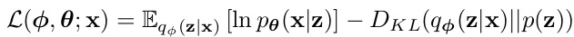

Review papers
An2015
Variational Autoencoder based Anomaly Detection using Reconstruction Probability
InProceedings (An2015)
An, J. & Cho, S.
Variational Autoencoder based Anomaly Detection using Reconstruction Probability
2015

The algorithm:
VAEs learn a distribution of the inputs
The latent distribution \(p(z)\) acts as a prior (in Bayesian terms), and is the multivariate standard normal and isotropic (i.e. separable, covariance matrix is diagonal)
\(f(x)\) is the encoder function
\(g(z)\) is the decoder function
The decoder function \(g(z)\) maps the distribution of the latent variable \(z\) into an output distribution \(p(x|z)\) which should resemble the original distribution of \(x\)
During reconstruction, when we sample a single latent variable \(z\), we reconstruct a single vector \(\hat{x}\), so we have a single sample of the output distribution \(p(x|z)\)
Idea for using Reconstruction Probability as an anomaly measure:
sample multiple latent variables \(z^k\), and for each of them reconstruct the vector \(\hat{x}^k\)
use all the vectors \(\hat{x}^k\) to estimate the probability \(p(x|z)\), and then compute the likelihood that the original input \(x\) comes from this distribution
assuming \(p(x|z)\) is a an isotropic normal distribution, we just compute the mean \(\mu = E \lbrace \hat{x} \rbrace\) and covariance matrix \(\Sigma\) (diagonal, so basically we compute the variance \(\sigma_i^2\) per entry of the vector)
the log-likelihood that the original \(x\) is generated by this distribution amounts to a weighted \(\ell_2\) norm:
\[L(x) = \sum_i \frac{(x_i - \mu_i)^2}{\sigma_i^2}\]
we use this as an anomaly score: small value = more anomaly, large value = more normal
small value => anomaly, because \(x\) does not fit the output probability \(p(x|z)\)
Better than normal AE, because the variances are taken into account
Perhaps the variances \(\sigma_i^2\) can be used as indicators for feature selection?
- or are they just similar to the clones values based on the input variances
Wievel2019
Continual Learning for Anomaly Detection with Variational Autoencoder
InProceedings (Wiewel2019)
Wiewel, F. & Yang, B.
Continual Learning for Anomaly Detection with Variational Autoencoder
ICASSP 2019 - 2019 IEEE International Conference on Acoustics, Speech and Signal Processing (ICASSP), 2019, 3837-3841
Use the full loss function as anomaly score, which includes the reconstruction error and the KL distance between the distribution of \(z\) and the standard normal prior \(p(z)\)
the so called evidence lower bound (ELBO): 
While [4, 5, 6, 7] use the reconstruction probability E q φ (z|x i ) [ln p θ (x i |z)] as the anomaly score, we use the ELBO as the anomaly score because it gives slightly better results in our experiments.
The “reconstruction probability” used in An2015 is just the first part of the loss function (ELBO), why not use the full loss, since this is what the model was trained to minimize